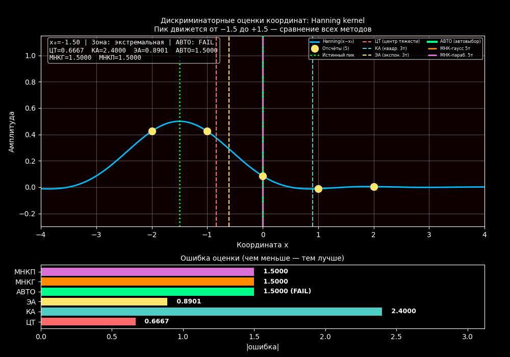
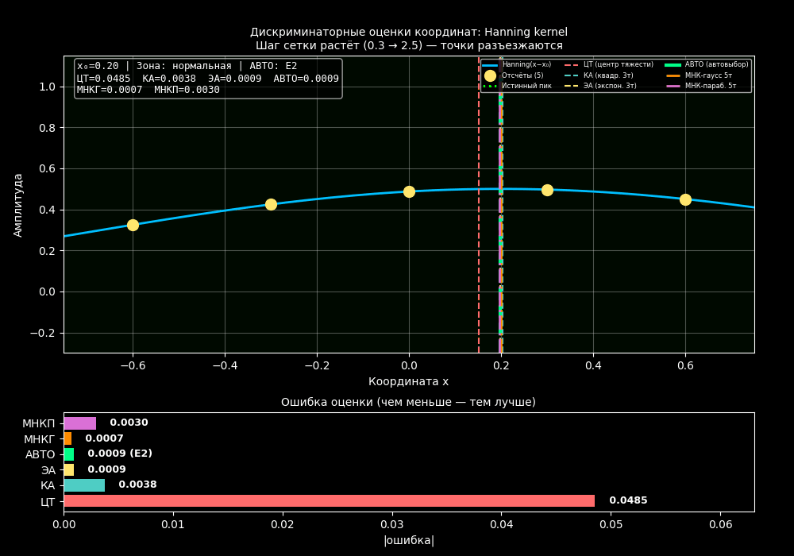
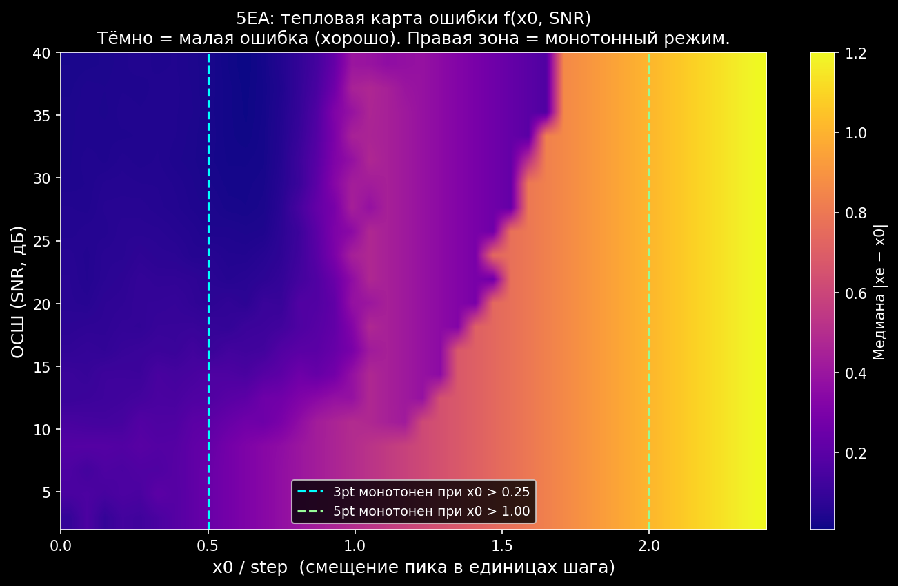
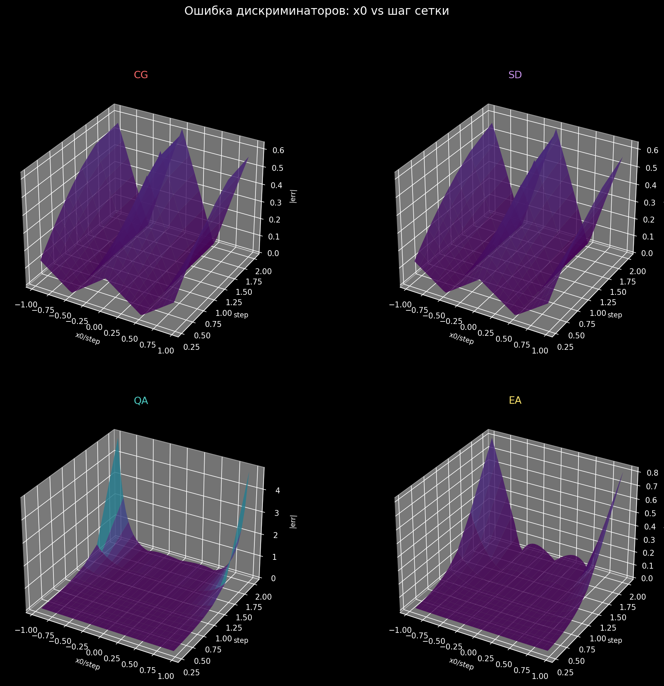
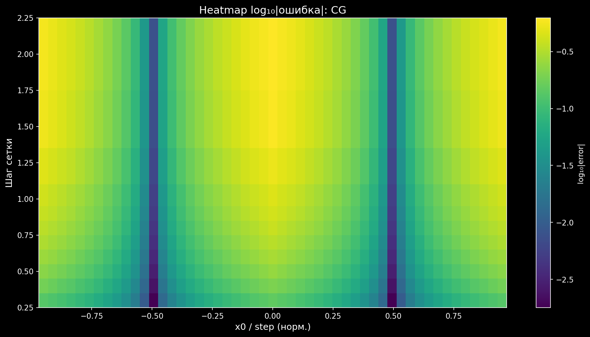
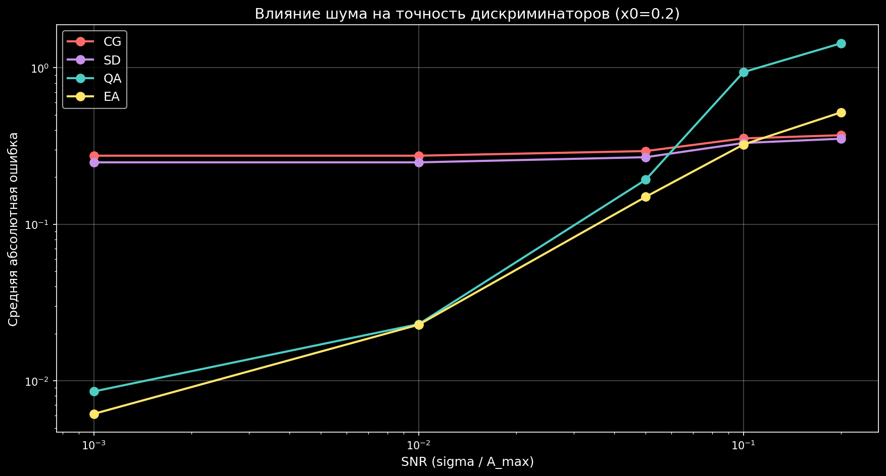
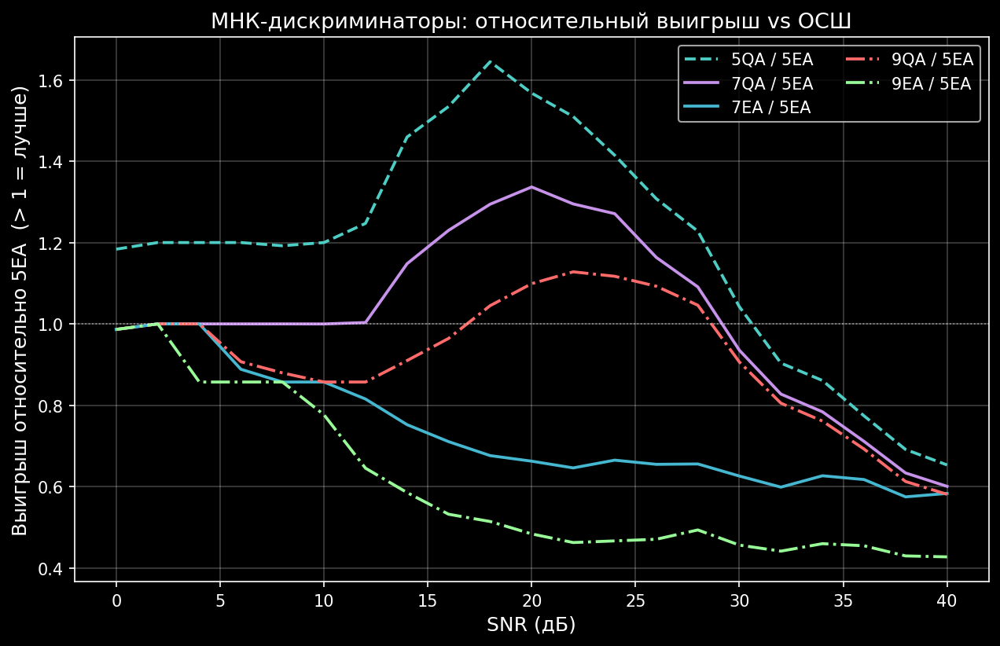
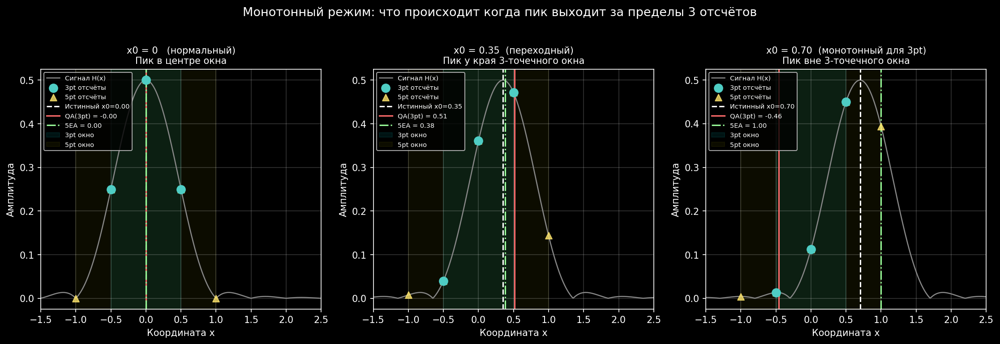

Визуальный разбор¶
Анимации, 3D-карты и heatmap’ы — посмотреть методы «вживую»
Самый быстрый способ понять, как ведут себя методы — посмотреть, как они реагируют на движущийся пик и нарастающий шум. На этой странице собраны все наглядные иллюстрации модуля.
Раздел 1. GIF-анимации — поведение в динамике¶
Sweep по всей зоне — все методы вместе¶
{kind=link}

Рис. 22 Sweep по всей зоне: пик плавно движется через окно, видно где методы расходятся.¶
Что происходит на кадре:
по горизонтали — координата;
голубая кривая —
sinc/Hanning kernel с движущимся пиком;зелёный пунктир — истинное положение пика \(x_0\);
цветные вертикальные линии — оценки разных методов;
крайние точки — отсчёты, которые «видит» алгоритм.
На что смотреть:
В центральной зоне (\(|x_0| \leq 0.5\) шага) — все методы вместе.
Ближе к краям — 3-точечные методы (CG, SD, QA, EA) разбегаются: пик уходит из их «зоны видимости».
5-точечные (5QA, 5EA) держат пик намного дольше и не отрываются от зелёной пунктирной линии.
Крупный план — нормальная зона¶

Рис. 23 То же самое, но крупным планом, в пределах нормальной зоны.¶
Крупный план нормальной зоны \(|x_0| \leq 1\) шаг. Здесь видно даже мелкие различия между методами:
EA сидит почти на самой зелёной линии;
QA немного дрожит относительно неё;
CG/SD ощутимо смещены.
Нарастание шума¶

Рис. 24 Шум постепенно нарастает: SNR падает с 40 дБ до 0 дБ.¶
Что происходит: пик стоит на месте, а шум плавно нарастает. Каждый кадр — новая случайная реализация шума.
На что смотреть:
При высоком SNR все оценки сидят рядом с истинным пиком.
При низком SNR оценки начинают «дрожать». Чем стабильнее метод, тем меньше амплитуда дрожания.
5EA / 5QA дрожат заметно меньше, чем 3-точечные собратья — это визуальное подтверждение их шумоустойчивости.
Резкое изменение пика¶
{kind=link}

Рис. 25 Step-change: пик мгновенно прыгает на новую позицию.¶
Тестируем переходный процесс: пик мгновенно скачет с одной координаты на другую. Все методы немедленно реагируют — дискриминаторы не имеют памяти.
Авто-демо всех сценариев¶

Рис. 26 Auto-demo: sweep + нарастание шума + step-change подряд.¶
Все три сценария подряд в одном GIF-файле — удобно для презентаций.
Раздел 2. Карты точности — 3D и heatmap¶
5EA: точность как функция (x0, SNR)¶
Это самая важная карта — показывает, как ведёт себя рекомендуемый метод 5EA в двумерном пространстве ключевых параметров: смещение пика \(x_0\) и уровень шума SNR.

Рис. 27 3D-поверхность 5EA: ось X — \(x_0\), ось Y — SNR, высота — медианная ошибка.¶
{kind=link}

Рис. 28 Тепловая карта 5EA: вид сверху на ту же поверхность.¶
Что видно:
Левая нижняя зона (малый \(x_0\), высокий SNR) — тёмная = маленькая ошибка. Это идеальные условия: пик по центру окна, шум слабый.
Правая зона (большой \(x_0\)) — резкий рост ошибки. Это монотонная зона (пик вышел за пределы 3-точечного окна).
Верхняя зона (низкий SNR) — ошибка растёт при любом \(x_0\): шум слишком сильный.
Практический вывод: чтобы получить ошибку < 0.05 шага, нужно одновременно:
удерживать SNR > 15 дБ И
держать :math:`|x_0| < 1.5` шага от центра окна.
Сравнение 4 классических методов¶
{kind=link}

Рис. 29 Четыре 3D-поверхности: CG / SD / QA / EA как функция \((x_0, d)\).¶
Сравниваем — у какого метода «долина» глубже (меньше ошибка) и шире (больше допустимый диапазон \(x_0\)).
Типичный вывод:
EA — самая глубокая долина (точнее всех на чистом сигнале).
CG — самая широкая, но мелкая (грубо, но устойчиво).
QA — промежуточный вариант.
SD — нестабилен при неправильном выборе коэффициента \(c\).
Тепловые карты по отдельным методам¶
{kind=link}

Рис. 30 Heatmap ошибки CG.¶

Рис. 31 Heatmap ошибки SD.¶

Рис. 32 Heatmap ошибки QA.¶

Рис. 33 Heatmap ошибки EA.¶
Тёмная горизонтальная полоса на каждой карте = оптимальный диапазон шага сетки \(d\). Именно эту полосу нужно искать, выбирая шаг под свою задачу.
Раздел 3. Чистый сигнал — точность на эталоне¶
Все дискриминаторы на sinc(x − 0.25)¶

Рис. 34 sinc(x − 0.25): голубая ДН, жёлтые отсчёты, вертикальные оценки
методов.¶
Что нарисовано:
Голубая линия —
sinc(x − 0.25), реалистичная ДН антенны;Жёлтые точки — 3 отсчёта на сетке \(\{-1, 0, +1\}\);
Вертикальные линии — оценки CG / QA / EA / 5EA;
Зелёная пунктирная — истинное положение пика \(x_0 = 0.25\).
EA и 5EA сидят почти на самой зелёной линии. CG ощутимо левее.
МНК-5 на Hanning kernel¶

Рис. 35 5QA и 5EA на Hanning kernel: парабола идеально ложится на колокол.¶
Тот же эксперимент, но на Hanning kernel (форма пика после FFT с Hanning-окном). 5 точек, две оценки 5QA / 5EA, обе очень близки к истинному значению.
Ошибка vs смещение пика — sweep¶

Рис. 36 Ошибка \(|x_e - x_0|\) vs истинное \(x_0\) — все методы на одном графике.¶
Базовый бенчмарк. Чем ниже кривая, тем точнее метод.
Наблюдения:
CG и SD — почти линейно растут (классическая систематическая ошибка).
QA — почти 0 в нормальной зоне, потом резкий рост.
EA — самая низкая в нормальной зоне.
МНК 5/7/9 точек — без шума¶

Рис. 37 МНК 5/7/9 точек: абсолютная ошибка vs \(x_0\), лог. шкала Y.¶
Главное наблюдение: EA-кривые в ~10× ниже QA-кривых при любом числе точек. Логарифмирование амплитуд (подгонка гауссиана вместо параболы) даёт большой выигрыш на Hanning kernel.
Раздел 4. С шумом — устойчивость¶
Базовые методы под Монте-Карло шумом¶
{kind=link}

Рис. 38 CG/SD/QA/EA: средняя ошибка vs SNR (Монте-Карло).¶

Рис. 39 CG/SD/QA/EA: СКО ошибки vs SNR — насколько разлетаются оценки.¶
При снижении SNR оценки разлетаются. Метод с меньшим СКО = более стабильный.
5pt vs 3pt под шумом — Hanning¶

Рис. 40 Hanning kernel: 5pt vs 3pt — средняя ошибка и СКО vs SNR.¶
5pt-методы выигрывают всегда — а особенно при SNR < 20 дБ.
МНК 5 / 7 / 9 точек под шумом¶

Рис. 41 МНК 5/7/9: медиана ошибки vs SNR.¶
{kind=link}

Рис. 42 Выигрыш N-pt относительно 5EA: где имеет смысл брать больше точек.¶
При SNR > 20 дБ — все примерно одинаково. При SNR < 15 дБ — 7pt и 9pt заметно лучше. Но это редкие условия — для типичного радара 5pt оптимум.
Раздел 5. Монотонная зона¶
{kind=link}

Рис. 43 Три сценария: нормальный / переходный / монотонный — как они выглядят.¶

Рис. 44 Монотонная зона: bias QA(3pt) vs 5QA vs 5EA.¶

Рис. 45 Монотонная зона + шум: 5EA значительно точнее QA(3pt).¶
Главный вывод: в монотонной зоне (пик за пределами окна) 3-точечные методы сильно ошибаются, а 5-точечные продолжают работать.
Дальше¶
Формулы — полные формулы всех методов
Рекомендации — итоговые рекомендации
Сравнение методов — сравнение методов
Тесты — описание тестового покрытия